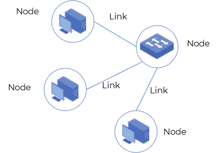
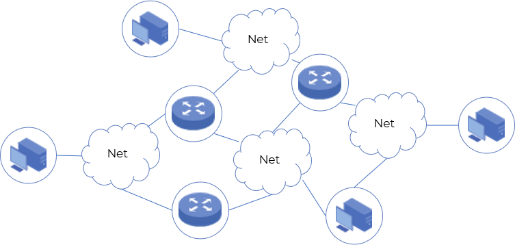
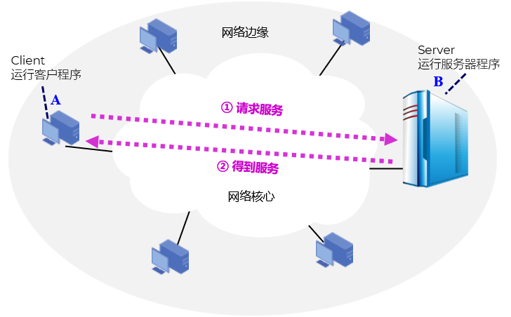
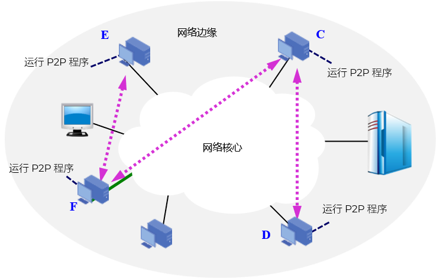
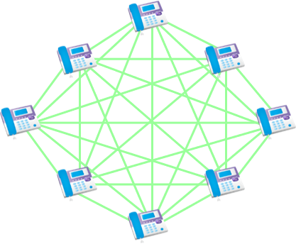
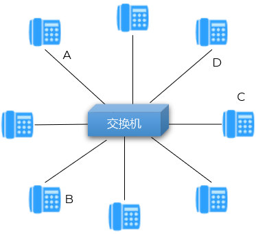
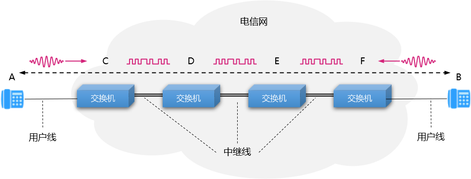
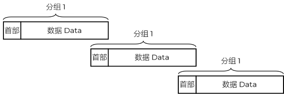

被用户调用后运行，需主动向远地服务器发起通信（请求服务 - Request）
必须知道服务器程序的地址
不需要特殊的硬件和很复杂的操作系统
专门用来提供某种服务的程序，可同时处理多个客户请求（响应服务 - Response）
一直不断地运行着，被动地等待并接受来自各地的客户的通信请求
不需要知道客户程序的地址
一般需要强大的硬件和高级的操作系统支持

浏览器/服务器方式 B/S
Browser/Server
用户借助浏览器和服务器通信，无需下载庞大的客户端
又称廋 C/S

N(N –1)/2
5 部电话机两两直接相连，需 10 对电线




根据首部中包含的 地址信息 等重要控制信息进行转发（目的地址、源地址）
每一个分组在互联网中 独立选择 传输路径
位于网络核心部分的路由器负责转发分组，即进行分组交换
路由器要创建和动态维护转发表
若要连续传送大量的数据，且其传送时间远大于连接建立时间，则电路交换的传输速率较快
报文交换和分组交换不需要预先分配传输带宽，在传送突发数据时可提高整个网络的信道利用率
由于一个分组的长度往往远小于整个报文的长度，因此分组交换比报文交换的时延小，同时也具有更好的灵活性